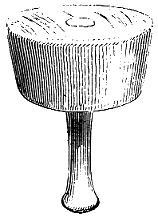

Eugène VIOLLET le DUC
Dictionnaire raisonné du mobilier.
 Figure 1 MAILLET, s. m. Au XIIe siècle, dans certaines provinces, les tailleurs de pierre se servaient d'un maillet de bois pour frapper sur le ciseau à large tranchant avec lequel on faisait les ciselures et les parements. Ces maillets étaient en forme de cône tronqué (fig. 1), et le tailleur de pierre prenait l'habitude de le tourner dans la main à chaque coup, afin de ne pas le creuser sur un point. Les menuisiers se servaient du maillet plat pour frapper sur la tête du ciseau, ainsi que cela se pratique encore de nos jours.